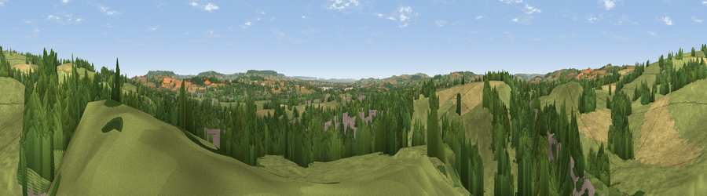

Viewpoint near Sampford Peverell
#21276 in England · top 40% of its area beats it · near Sampford PeverellThe view, rendered

A 360° render of this exact spot computed from the terrain model, tree cover and land cover — summer colours, afternoon light, calibrated against photographs of famous viewpoints. Real trees, hedges and buildings will differ in detail.
The panorama
Grey silhouette: terrain skyline in each direction (720 bearings, Earth curvature and refraction included). Dashed green: skyline with trees (+15 m) and buildings (+8 m) as obstacles. Blue strip: how far the ground is visible on each bearing.
Where the view opens
Wedge length = distance to the farthest visible ground on that bearing (vegetation-aware). Rings at 10, 25 and 50 km.
What fills the view
56% grassland · 27% woodland · 12% cropland · 5% built-up
Angular shares of the visible panorama (visual magnitude), not map area. Landscape diversity 0.47 (0–1 Shannon).
Key numbers
More beautiful places nearby
The staircase of upgrades: each row has a higher view potential than everything closer. Driving times are estimates from straight-line distance, calibrated against real road routing — check an actual route before setting out.
| Place | Direction | Drive | Score |
|---|---|---|---|
| Viewpoint near Uplowman | N · 2 km | ~4 min | 58.7 |
| Newmill Hill | N · 2 km | ~5 min | 59.6 |
| Viewpoint near Hockworthy | NNE · 5 km | ~12 min | 61.0 |
| Barton Hill | WNW · 5 km | ~12 min | 66.1 |
| Viewpoint near Chevithorne | WNW · 6 km | ~13 min | 66.2 |
| Heniton Hill | N · 7 km | ~14 min | 66.6 |
| Viewpoint near Blackborough | SE · 8 km | ~17 min | 71.9 |
| Viewpoint near Sampford Arundel | ENE · 9 km | ~18 min | 72.3 |
50.92377, -3.38395 · source: screening · position refined by local search. Computed location — check access rights before visiting.